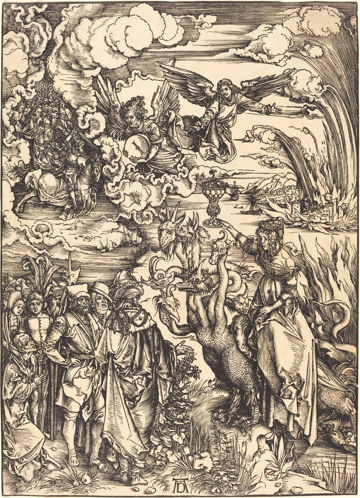

Revelation 17 — The Mister Translation

⚠ The last woodcut but one of Dürer’s Apocalypse puts three chapters on one block: the woman on the beast holding up the golden cup of verse 4 to a crowd of onlookers, in the rich dress of Dürer’s own day; above her, Babylon burning and an angel with the millstone of chapter 18; and at the upper left the rider of chapter 19 with the armies of heaven.

Translator’s Notes
“And one of the seven angels who had the seven bowls came and spoke with me, saying, ‘Come, I will show you the judgment of the great prostitute who is seated on many waters, with whom the kings of the earth committed sexual immorality, and those who dwell on the earth were made drunk with the wine of her sexual immorality.’” The same words introduce the other woman of the book’s ending: “one of the seven angels who had the seven bowls … came, and spoke with me, saying, ‘Come, I will show you the bride, the wife of the Lamb’” (Revelation 21:9). Two women, two cities. Pornē, “prostitute,” stands in twelve verses of the New Testament, five of them in Revelation; elsewhere it is the word of “Rahab the prostitute” (Hebrews 11:31). “Seated on many waters” is what Jeremiah said to Babylon on the Euphrates, “O you who dwell on many waters” (Jeremiah 51:13), and verse 15 will say what the waters are. “Sexual immorality” is porneia, as in the wine of Revelation 14:8, in this book the figure of idolatry and of trading with it (dictionary). The KJV reads “the judgment of the great whore that sitteth upon many waters”; the NIV reads “the punishment of the great prostitute, who sits by many waters”; the NWT 1984 reads “the judgment upon the great harlot.”
“And he carried me away in the Spirit into a wilderness. And I saw a woman seated on a scarlet beast, full of names of blasphemy, having seven heads and ten horns.” “In the Spirit” is how John was taken up at Revelation 4:2. The wilderness is where the other woman of chapter 12 fled for refuge (Revelation 12:6); this one sits there enthroned. The beast is the one from the sea, with “ten horns and seven heads … and on its heads names of blasphemy” (Revelation 13:1), now covered with them. Kokkinos, “scarlet,” stands in six verses; one is the “scarlet cloak” the soldiers put on Jesus (Matthew 27:28). The ASV reads “he carried me away in the Spirit into a wilderness”; the NWT 1984 reads “in [the power of the] spirit,” in lower case; the KJV reads “a scarlet coloured beast, full of names of blasphemy.”
⚠ “And the woman was clothed in purple and scarlet, and gilded with gold and precious stone and pearls, holding a golden cup in her hand, full of abominations and the unclean things of her sexual immorality; and on her forehead a name was written, a mystery: ‘Babylon the great, the mother of prostitutes and of the abominations of the earth.’” The golden cup is Jeremiah’s, “Babylon was a golden cup in the hand of Jehovah, making all the earth drunk” (Jeremiah 51:7). “Abominations” is bdelygma, the word of “the abomination that desolates” (Matthew 24:15) and of “what is highly regarded among people is an abomination in the sight of God” (Luke 16:15). The name on her forehead answers the names on the foreheads of the 144,000 (Revelation 14:1) and the mark of 13:16. Whether “mystery” is part of the name or says the name is to be read as a riddle, readings differ: the KJV prints it in the name, “MYSTERY, BABYLON THE GREAT, THE MOTHER OF HARLOTS”; the NWT 1984 reads “was written a name, a mystery,” and sets the name apart; the Douay reads “A mystery; Babylon the great, the mother of the fornications.” Mystērion stands in four verses of Revelation, two of them here and in verse 7, where the angel explains it.
“And I saw the woman drunk with the blood of the holy ones and with the blood of the witnesses of Jesus. And when I saw her, I marveled with a great marveling.” The blood is the blood the third bowl avenged, “they poured out the blood of holy ones and prophets” (Revelation 16:6). “Witnesses” is martyres, as Antipas was “my witness, my faithful one” (Revelation 2:13); the English “martyr” comes from this word, because so many witnesses died. “I marveled with a great marveling” keeps the Greek’s doubled word; the whole earth “marveled” after the beast (Revelation 13:3), and the angel will ask John why he does. The KJV reads “the blood of the martyrs of Jesus: and when I saw her, I wondered with great admiration”; the ASV reads “I wondered with a great wonder”; the NIV reads “those who bore testimony to Jesus.”
“And the angel said to me, ‘Why did you marvel? I will tell you the mystery of the woman and of the beast that carries her, which has the seven heads and the ten horns.’” The angel explains the vision as the angel explains Daniel’s beasts in Daniel 7. “Mystery” is the word of “the mystery of God” at Revelation 10:7: a secret now told. The KJV reads “Wherefore didst thou marvel?”; the NWT 1984 reads “the wild beast that is carrying her.”
⚠ “The beast that you saw was, and is not, and is about to come up out of the Abyss, and it goes to destruction. And those who dwell on the earth will marvel, those whose name has not been written in the book of life from the founding of the world, when they see the beast, that it was, and is not, and will be present.” The beast’s three tenses mimic the name of God, “who was and who is and who is to come” (Revelation 4:8), and its return mimics the Lamb’s, as its head “slain to death” was healed (Revelation 13:3). “Will be present” is parestai, which stands only here. “Come up out of the Abyss” is the phrase of Revelation 11:7, “the beast that comes up out of the Abyss”; abyssos stands in nine verses of the New Testament, seven of them in Revelation. “Destruction” is apōleia (dictionary), the word of Peter’s “May your silver go with you to destruction” (Acts 8:20), and kin to the name Apollyon, “Destroyer,” the angel of the Abyss (Revelation 9:11). The book of life and “from the founding of the world” stood together at Revelation 13:8, where the phrase comes after “the Lamb who was slain”; here, with no Lamb in the sentence, it goes with “written.” Tregelles and the Byzantine text read “and to go to destruction”; the Byzantine text reads “names.” The KJV reads “the beast that was, and is not, and yet is,” a reading the four editions do not have; the ASV reads “how that he was, and is not, and shall come”; the NWT 1984 reads “and yet will be present”; the Douay reads “seeing the beast that was, and is not,” without the last clause.
⚠ “Here is the mind that has wisdom. The seven heads are seven mountains on which the woman is seated.” “Here is … wisdom” is the formula that introduced the number of the beast, “Here is wisdom. Let the one who has understanding calculate” (Revelation 13:18): what follows is to be worked out. Many readers since antiquity have taken the seven mountains as Rome, the city of seven hills, and the woman as Rome seated on them; some take the mountains as kingdoms, as mountains often stand for powers in the prophets; readings differ. The NIV reads “The seven heads are seven hills on which the woman sits”; the KJV reads “And here is the mind which hath wisdom. The seven heads are seven mountains”; the NWT 1984 reads “Here is where the intelligence that has wisdom comes in.”
“And they are seven kings: five have fallen, one is, the other has not yet come; and when he comes he must remain a little while.” The same heads are now kings: a second key laid over the first. Who the kings are, readings differ. One reading counts Roman emperors from Augustus or from Julius Caesar, and depending on where the count begins and whether the short reigns of 68–69 are counted, “one is” falls on Nero, Vespasian or Domitian; another takes seven successive empires, from Egypt or Assyria to Rome and one still to come; another takes seven as the book’s number for completeness, with no list behind it. The ASV reads “the five are fallen, the one is, the other is not yet come”; the KJV reads “he must continue a short space.”
“And the beast that was and is not, he himself is also an eighth, and he is of the seven, and he goes to destruction.” “He himself” is autos, masculine, though “beast” is neuter: the beast is a person, a king. An eighth who is also one of the seven, who was and is not and returns: many readers since antiquity have heard behind it the rumor, reported by Roman historians (not checked here), that Nero had not died or would come back; others read it as the beast’s parody of resurrection, without a single historical figure. Tregelles reads “this one” for “he himself.” The KJV reads “even he is the eighth, and is of the seven, and goeth into perdition”; the NWT 1984 reads “it is also itself an eighth [king], but springs from the seven”; the NIV reads “is an eighth king. He belongs to the seven.”
“And the ten horns that you saw are ten kings who have not yet received a kingdom, but they receive authority as kings for one hour with the beast. These have one purpose, and they give their power and authority to the beast.” The interpretation is Daniel’s, “And as for the ten horns, out of this kingdom ten kings shall arise” (Daniel 7:24). “One hour” is a short reign, and the hour of Babylon’s judgment in chapter 18 is the same length. “Purpose” is gnōmē, Paul’s word for his “opinion” at 1 Corinthians 7:25; it comes back twice in verse 17. The KJV reads “but receive power as kings one hour with the beast. These have one mind”; the Douay reads “one hour after the beast”; the NWT 1984 reads “These have one thought.”
“These will make war with the Lamb, and the Lamb will conquer them, because he is Lord of lords and King of kings, and those with him are called and chosen and faithful.” The Lamb conquers as “the Lion of the tribe of Judah … has conquered” (Revelation 5:5). “Lord of lords” is said of Jehovah in the Law, “he is the God of gods and the Lord of lords” (Deuteronomy 10:17), and here of the Lamb; Revelation 19:16 gives the two titles in the other order, “King of kings and Lord of lords”, and 1 Timothy writes them with participles, “the King of those who reign and Lord of those who rule as lords” (1 Timothy 6:15). “Called and chosen” recalls “many are called, but few are chosen” (Matthew 22:14); here the called and the chosen are the same people, and faithful. The KJV reads “for he is Lord of lords, and King of kings: and they that are with him are called, and chosen, and faithful”; the ASV supplies “and they also shall overcome that are with him”; the NWT 1984 supplies “[will do so].”
“And he says to me, ‘The waters that you saw, where the prostitute is seated, are peoples and crowds and nations and tongues.’” The book’s fourfold list of humankind, “every tribe and tongue and people and nation” (Revelation 5:9; 11:9), here has “crowds,” ochloi, in the place of “tribes,” as 10:11 had “many kings.” The KJV reads “are peoples, and multitudes, and nations, and tongues”; the Douay reads “are peoples, and nations, and tongues,” with three; the NWT 1984 reads “peoples and crowds and nations and tongues.”
⚠ “And the ten horns that you saw, and the beast, these will hate the prostitute, and will make her desolate and naked, and will eat her flesh, and will burn her up with fire.” The powers she rode turn on her. The images are the prophets’ pictures of the unfaithful city as a woman whose lovers turn against her, “they shall deal with you in hatred … and leave you naked and bare” (Ezekiel 23:29), and the Law’s sentence on a priest’s daughter who prostitutes herself, “she shall be burned with fire” (Leviticus 21:9). The figure is a city, and the violence is the violence of empires against a capital; the book does not soften it. The Byzantine text adds “will make her” a second time. The KJV reads “the ten horns which thou sawest upon the beast, these shall hate the whore”; the ASV reads “and the beast, these shall hate the harlot, and shall make her desolate and naked”; the NWT 1984 reads “will completely burn her with fire.”
“For God has put it into their hearts to carry out his purpose, and to carry out one purpose, and to give their kingdom to the beast, until the words of God are finished. And the woman whom you saw is the great city that has a kingdom over the kings of the earth.” Even the beast’s allies carry out God’s purpose without knowing it. “Are finished” is teleō, as in “the mystery of God would be finished” (Revelation 10:7) and the fury “finished” in the last plagues (15:1). “The great city” was named at Revelation 11:8 and split in three at 16:19; which city it is, readings differ, and the reading most often given is Rome, the city that had a kingdom over the kings of the earth when John wrote. The KJV reads “For God hath put in their hearts to fulfil his will, and to agree”; the ASV reads “to do his mind, and to come to one mind”; the NWT 1984 reads “the great city that has a kingdom over the kings of the earth.”
Patterns worth carrying forward
What this chapter answers. Babylon has been named twice already, fallen at 14:8 and remembered at 16:19; here she is shown. One of the angels of the bowls shows John a woman, a prostitute enthroned on many waters and riding the scarlet beast, then explains her: the beast that was and is not and will be present, the seven heads that are mountains and kings, the ten horns that are kings for an hour, the waters that are peoples. The chapter ends by naming her plainly, “the great city,” and by turning the beast against her.
Where this translation keeps the exact words: “prostitute,” as at Hebrews 11:31; “sexual immorality”; “in the Spirit,” as at 4:2; “a mystery,” with the readings in the note; “witnesses”; “I marveled with a great marveling”; “was, and is not, and will be present”; “the Abyss” and “destruction”; “from the founding of the world,” as at 13:8; “mountains”; “he himself is also an eighth”; “one purpose”; “Lord of lords and King of kings,” in this chapter’s order; “crowds”; and “finished,” as at 10:7 and 15:1.
Echoes paid. “Babylon the great, the mother of prostitutes,” shown by one of the angels with the bowls, as promised at the close of Revelation 16; Babylon’s wine of Revelation 14:8; the beast with ten horns and seven heads and names of blasphemy of Revelation 13:1; the Abyss of Revelation 11:7; the head slain and healed of Revelation 13:3; the book of life of Revelation 13:8; “Here is wisdom” of Revelation 13:18; the blood of the holy ones of Revelation 16:6; and the great city of Revelation 16:19.
Echoes planted. Babylon’s fall sung and mourned in chapter 18, with “Come out of her, my people” and her judgment “in one hour”; the rider on the white horse with “King of kings and Lord of lords” on his robe at 19:16; and the beast thrown into the lake of fire at 19:20.
Next in this book: Revelation 18. Another angel cries “Fallen, fallen is Babylon the great”; a voice from heaven calls “Come out of her, my people”; the kings, the merchants and the seafarers stand far off and mourn her judgment “in one hour”; and a mighty angel throws a great millstone into the sea.